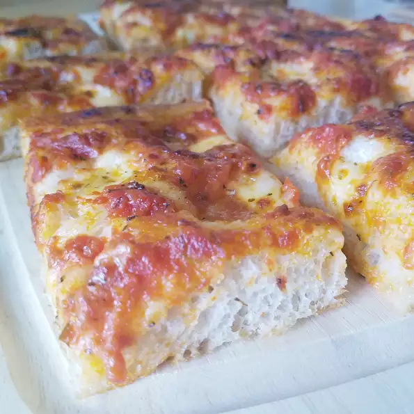

Backery-Style-Pizza

Description
Now found exclusively at one well-known pizza garden in Gravesend, Brooklyn, this style of pizza was once found in neighborhood bakeries.
This pizza is deceivingly light, crisp, and slightly spicy. Enjoy with a can of soda.
Ingredients
Teig:
- 1 ¼ Tassen warmes Wasser
- 1 Teelöffel aktive Trockenhefe
- 3 Tassen Brotmehl
- 1 ½ Teelöffel feines Salz
- ¼ Tasse Olivenöl, geteilt
Soße:
- 1 (28 Unzen) Dose einfache zerkleinerte Tomaten
- 1 (14 Unzen) Dose Pizzasauce (z. B. Don Peppino®)
Käse:
- 8 Unzen feuchtigkeitsarmer Vollmilchmozzarella, sehr dünn geschnitten
- ¼ Tasse geriebener Pecorino Romano-Käse
Steps
- Kombinieren Sie Wasser und Hefe in einer kleinen Schüssel. Etwa 5 Minuten stehen lassen, bis die Hefe weich wird und einen cremigen Schaum bildet.
- Kombinieren Sie Mehl und Salz in der Schüssel eines Standmixers, der mit einem Knethakenaufsatz ausgestattet ist. Hefemischung einfüllen. Kneten Sie den Teig, bis er glatt ist, etwa 7 Minuten.
- Eine große Schüssel leicht mit Olivenöl einfetten. Den Teig zu einer festen Kugel formen und die Oberseite leicht einfetten. In die Schüssel geben; lose mit Plastikfolie abdecken. Etwa 30 Minuten gehen lassen, bis sich das Volumen verdoppelt hat.
- Zerkleinerte Tomaten und Pizzasauce in einer Schüssel zu einer Sauce vermischen.
- Fetten Sie ein dickwandiges 12x17-Zoll-Backblech großzügig mit Olivenöl ein. Teig in den Boden drücken. Teig rundherum mit einer Gabel einstechen. Mozzarella-Käsescheiben auf dem Teig anrichten; mit 1 Tasse Sauce bedecken. Pecorino Romano darüber streuen. Übriges Olivenöl über die Pizza träufeln.
- Lassen Sie die Pizza an einem warmen Ort etwa 1 Stunde lang aufgehen, bis sie geschwollen ist.
- Backofen auf 230 Grad C vorheizen.
- Pizza auf der mittleren Schiene des vorgeheizten Ofens backen, bis die Ränder sehr dunkelbraun sind, die Oberseite jedoch nicht verbrannt ist, 15 bis 20 Minuten. 5 Minuten in der Pfanne abkühlen lassen, bevor sie in Quadrate geschnitten werden.